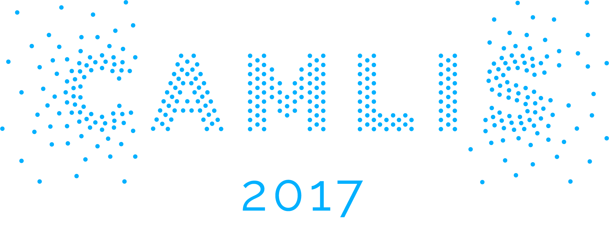

Conference on Applied Machine Learning for Information Security
For the past several months, I've been turning my attention toward an awesome new endeavor that I'm very excited about. Working with Hyrum Anderson, we decided to start a new conference whose sole focus would be bringing together data scientsts working in cybersecurity. We felt that while there are many (1) cybersecurity conferences and (2) machine learning and data science conferences, the overlap of the two is sparse and difficult to find. So we wanted to cultivate the community of data science practitioners who focus on cyber problems. Thus was born the first Conference on Applied Machine Learning in Information Security.
Given that we put this conference together on rather short notice, we were thrilled with how it turned out. We were able secure several awesome sponsors, over a dozen industry-leading data scientist speakers , and about 100 attendees from east to west coast. The talks were engaging and inspiring and covered a variety of topics including deep learning, clustering, and scalability challenges in cyber. Better still, it was awesome to get 100 cyber data scientists into one room to exchange ideas and drive progress forward.
I had a blast and am already excited to start working on CAMLIS 2018.